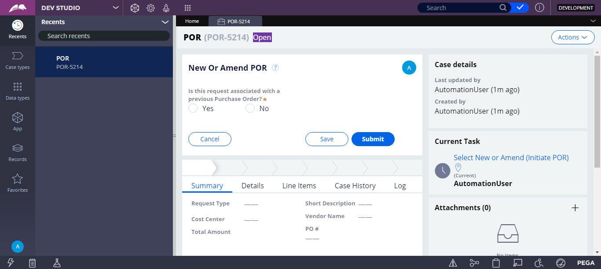

| Time | Log Level | Log Message |
| Tue Sep 15 13:39:46 IST 2020 | INFO | Start Time:Tue Sep 15 13:39:43 IST 2020 |
| Tue Sep 15 13:39:46 IST 2020 | INFO | Environment: TRACFONE-DT1 |
| Tue Sep 15 13:39:46 IST 2020 | INFO | Environment URL: https://trcfne-campgn-dt1.pegacloud.net/prweb |
| Tue Sep 15 13:39:46 IST 2020 | INFO | Browser Type: CHROME |
| Tue Sep 15 13:39:49 IST 2020 | INFO | Env Name:TRACFONE-DT1 |
| Tue Sep 15 13:39:49 IST 2020 | INFO | Env Name:TRACFONE-DT1 |
| Tue Sep 15 13:40:00 IST 2020 | INFO | Logging in as user apattanaik@tracfone.com |
| Tue Sep 15 13:40:00 IST 2020 | INFO | |
| Tue Sep 15 13:40:16 IST 2020 | INFO | The created POR Case ID is :POR-5214 |
| Tue Sep 15 13:40:17 IST 2020 | INFO | Test passed, but no ID provided - Expected = ' Open ' : Actual = 'Open' |
| Tue Sep 15 13:40:17 IST 2020 | INFO | Divcontains the expected Text ' Open ' |
| Tue Sep 15 13:40:17 IST 2020 | INFO |  |
| Tue Sep 15 13:40:18 IST 2020 | INFO | Caught StaleElementReferenceException |
| Tue Sep 15 13:40:20 IST 2020 | INFO | Caught StaleElementReferenceException |
| Tue Sep 15 13:40:27 IST 2020 | INFO | |
| Tue Sep 15 13:40:29 IST 2020 | INFO | PASS: Validation type was not marked as optionalBy.xpath: //input[@data-test-id='20200116165450027568383']: Test Passed |
| Tue Sep 15 13:40:41 IST 2020 | INFO | Caught StaleElementReferenceException |
| Tue Sep 15 13:41:18 IST 2020 | INFO | Test passed, but no ID provided - Expected = ' Pending-CostCenterApproval ' : Actual = 'Pending-CostCenterApproval' |
| Tue Sep 15 13:41:18 IST 2020 | INFO | Divcontains the expected Text ' Pending-CostCenterApproval ' |
| Tue Sep 15 13:41:28 IST 2020 | INFO | Test passed, but no ID provided - Expected = ' Pending-PurchasingApproval ' : Actual = 'Pending-PurchasingApproval' |
| Tue Sep 15 13:41:28 IST 2020 | INFO | Divcontains the expected Text ' Pending-PurchasingApproval ' |
| Tue Sep 15 13:41:34 IST 2020 | INFO | org.openqa.selenium.TimeoutExceptionthrown exception while trying to locateBy.xpath: [@data-test-id="2014100911285001362285"] |
| Tue Sep 15 13:41:39 IST 2020 | INFO | org.openqa.selenium.TimeoutExceptionthrown exception while trying to locateBy.xpath: [@data-test-id="2014100911285001362285"] |
| Tue Sep 15 13:41:45 IST 2020 | INFO | org.openqa.selenium.TimeoutExceptionthrown exception while trying to locateBy.xpath: [@data-test-id="2014100911285001362285"] |
| Tue Sep 15 13:41:50 IST 2020 | INFO | org.openqa.selenium.TimeoutExceptionthrown exception while trying to locateBy.xpath: [@data-test-id="2014100911285001362285"] |
| Tue Sep 15 13:41:56 IST 2020 | INFO | org.openqa.selenium.TimeoutExceptionthrown exception while trying to locateBy.xpath: [@data-test-id="2014100911285001362285"] |
{kind=link}
{kind=link}
{kind=link}